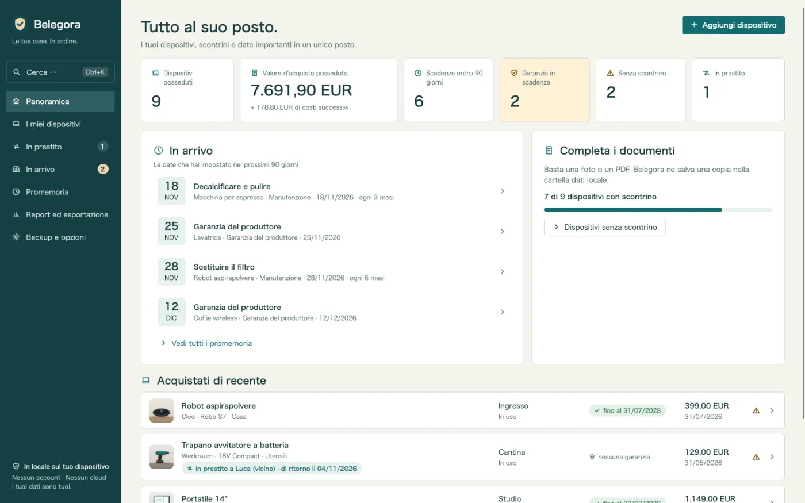
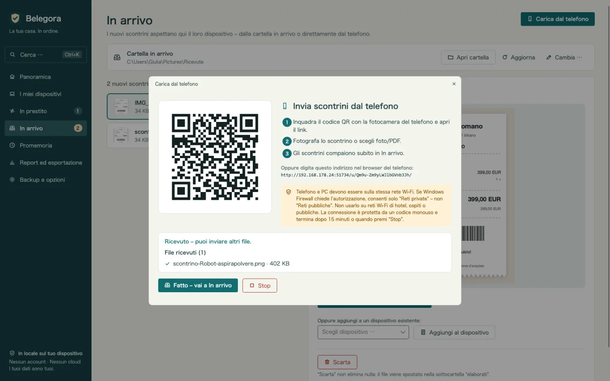
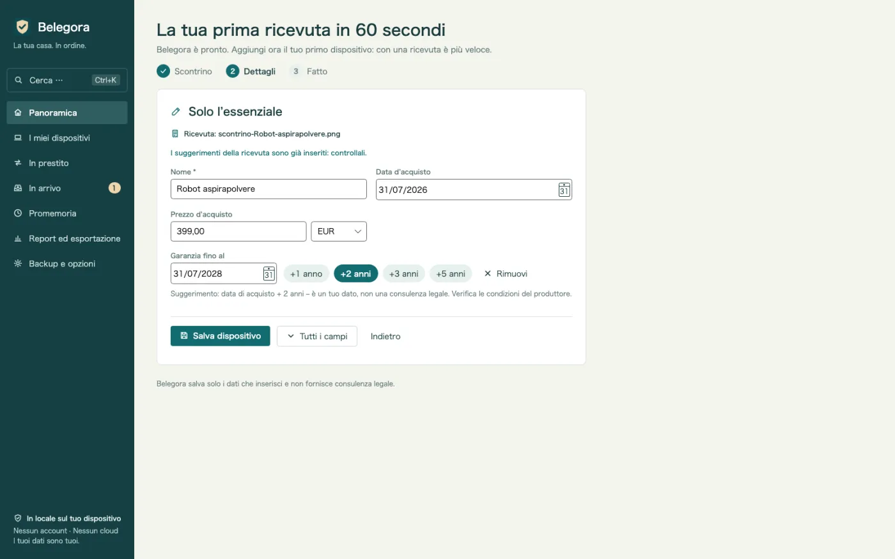
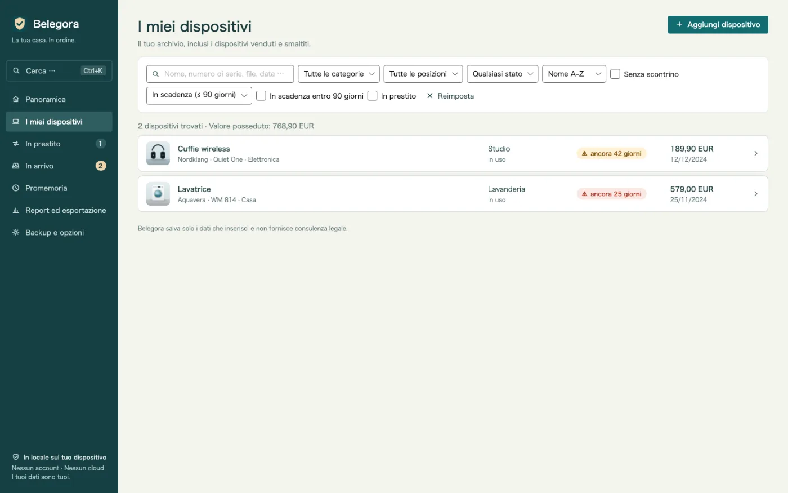
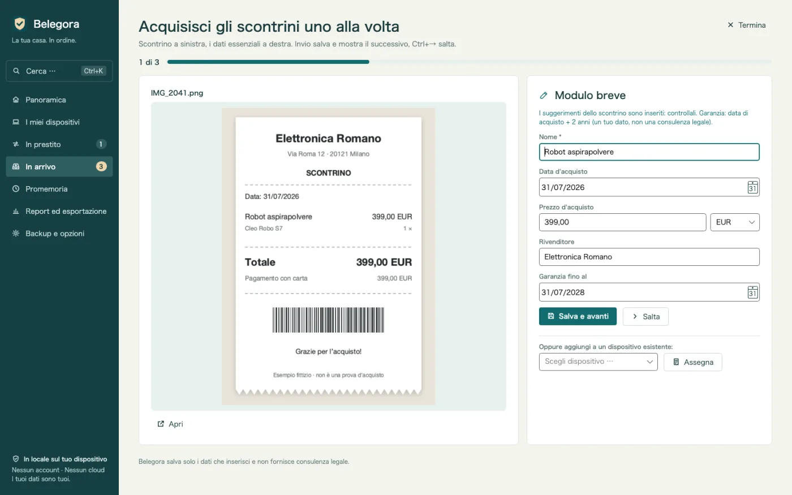
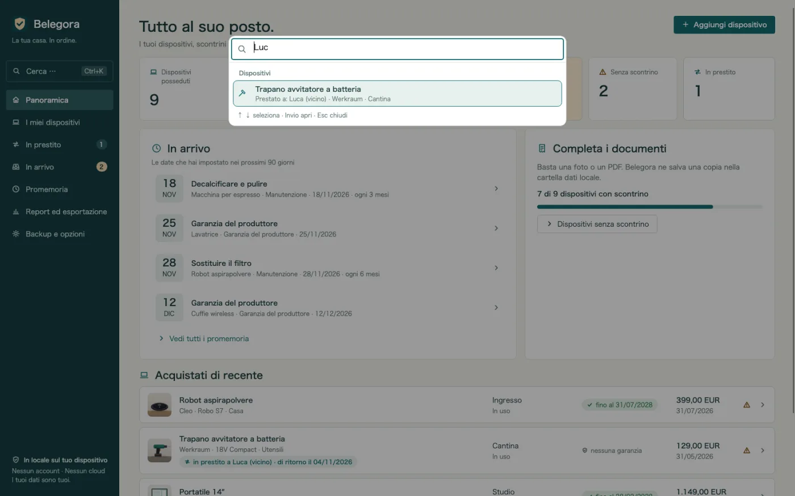
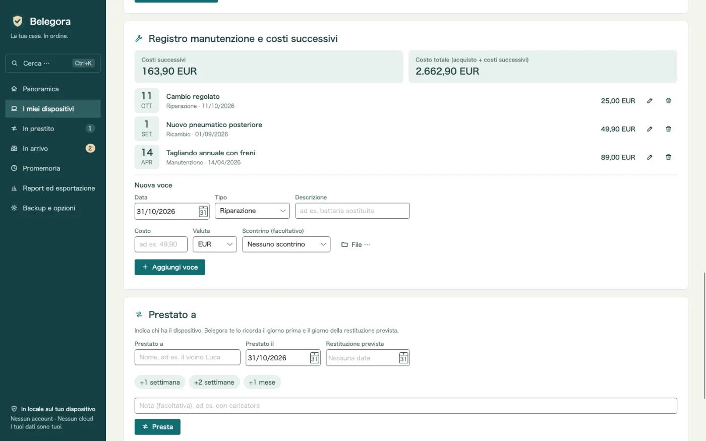
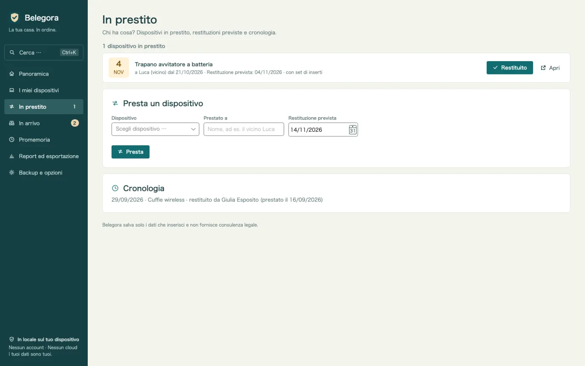
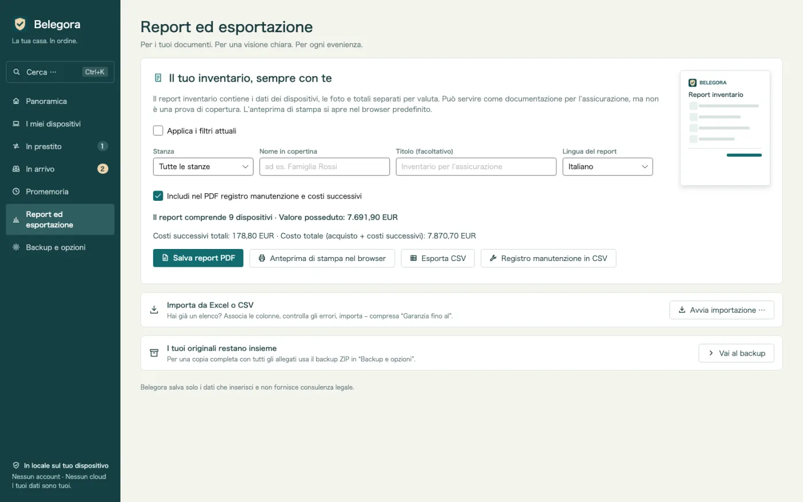
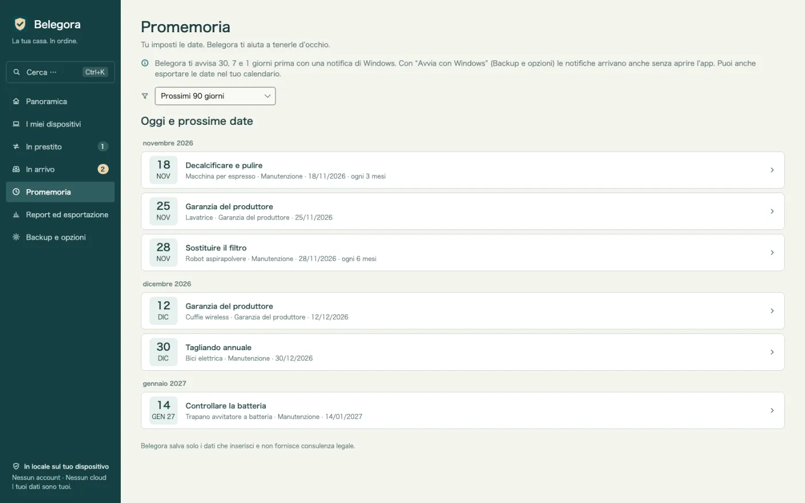

Promemoria prima delle scadenze
Garanzia, reso, assicurazione, manutenzione: Belegora mostra una notifica di Windows con l'anticipo che preferisci.
Archivio di garanzie e scontrini per Windows
La batteria cede dopo 20 mesi? Scontrino, numero di serie e data di garanzia in pochi secondi. Scontrini dal telefono con un codice QR, promemoria prima delle tue scadenze, PDF per l’assicurazione. Offline, senza account.

Belegora si occupa delle parti noiose: raccoglie gli scontrini, propone i dati e ti avvisa prima delle scadenze.
Garanzia, reso, assicurazione, manutenzione: Belegora mostra una notifica di Windows con l'anticipo che preferisci.
Scansiona il codice QR e carica la foto dal browser. Lo scontrino arriva via Wi-Fi nella posta in arrivo. Senza cavo, cloud o app.
Data di acquisto, importo e negozio vengono proposti dallo scontrino. Controlli, salvi e il dispositivo è creato con un clic.
L'elenco dei dispositivi mostra subito dove la garanzia sta per scadere, con la colonna «Garanzia fino al».
Trova ogni dispositivo per nome, numero di serie, rivenditore, etichetta, file o chi l’ha in prestito, e avvia azioni come PDF o backup – da tastiera.
Tanti scontrini uno dopo l’altro: a sinistra lo scontrino, a destra il modulo breve con suggerimenti. Invio salva, Ctrl+→ salta.
Annota riparazioni, manutenzioni, ricambi e accessori con i costi. Costi successivi e costo totale per dispositivo, anche nel PDF e in CSV.
Chi ha il trapano? Prestato a, da quando, restituzione prevista – con promemoria e cronologia. E un riepilogo una volta alla settimana.
Dopo un allagamento o un furto: rapporto con copertina, elenco per stanza, totali, foto e scontrini. Lingua del rapporto a scelta.
Importa il tuo elenco con l'abbinamento delle colonne. Esporta in CSV e le scadenze in ICS per qualsiasi calendario.
I backup, allegati compresi, sono automatici. Il ripristino mostra un'anteprima.
Niente cloud, account, pubblicità o tracciamento. I tuoi dati restano sul tuo PC.
Buono a sapersi: Belegora memorizza i tuoi dati e le tue scadenze e non fornisce consulenza legale. Le notifiche compaiono mentre Belegora è in esecuzione; l’app può avviarsi con Windows. Il riconoscimento del testo usa l’OCR di Windows e richiede il relativo pacchetto lingua di Windows.
Invia una foto dal telefono via QR, metti un file nella cartella di arrivo o importa il tuo elenco Excel.
Belegora propone data, importo e negozio. Crea il dispositivo, imposta la scadenza e l'anticipo.
Belegora ti avvisa in tempo. In caso di danno, il rapporto per l'assicurazione è pronto in pochi minuti.









14,99 €
una tantum, prezzo previsto in Germania
In preparazione per il Microsoft Store. I prezzi possono variare da paese a paese.
Solo tu. Belegora non invia dati a noi né a terzi; niente account né telemetria. Il caricamento dal telefono funziona solo nella tua rete locale.
In locale sul tuo PC, nella cartella dati dell'app (%LOCALAPPDATA%\MinhStudios\Belegora), con le copie degli allegati e i backup automatici.
Crea un backup in Belegora (ZIP con tutti i dati e gli allegati), copialo sul nuovo PC, installa Belegora e ripristinalo. L'anteprima mostra cosa verrà ripristinato.
No. Belegora memorizza dati e scadenze e non fornisce consulenza legale. Il diritto va verificato con negozio, produttore o assicurazione.
Le notifiche compaiono mentre Belegora è in esecuzione; l'app può avviarsi con Windows. In alternativa esporta le scadenze in ICS nel calendario.